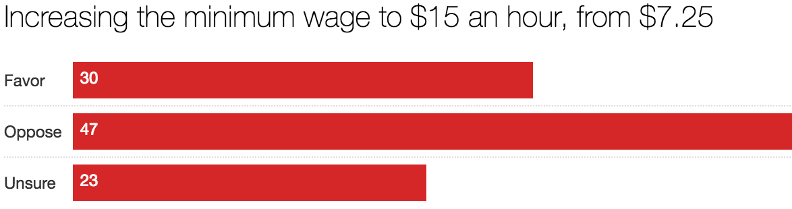

Representative surveys of NC State students
Learn more at packpoll.com
Students Believe US Made Better by Immigrants
Students were asked on a scale of 1-11 how they felt about immigrants’ impact on cultural life, the economy, and the United States as a place to live with 1 being the most negative and 11 being the most positive. We found a overall majority support among NC Students but a clear divide does exist between Clinton and Trump voters.
http://go.ncsu.edu/poll-immigrants
Students Overwhelmingly Disapprove of Trump

When asked on their opinion on how well Trump is handling his job as president, only 26% of students approve of the way Trump is handling the presidency with 69% disapproving and 5% with no opinion. At his lowest point, Obama received 28% approval from students in the fall of 2013, and at his highest point, 60% approval in the fall of 2016.
http://go.ncsu.edu/poll-trump
Students Not on Board with a $15/hr Minimum Wage

When asked about raising the minimum wage from $7.25 and hour to $15 an hour, the majority of students opposed this increase. Only 30 percent of students support raising the minimum wage in contrast to the 54 percent of Americans ages 18-39 that say they support an increase in national polls.
http://go.ncsu.edu/poll-wage
Is it Socially Desirable to be “Independent” on Campus?

Looking at which party students identify with, 33 percent of students identified as Independent in a recent survey. Do these students truly not align with a party? When asked about their partisan leaning, these most Independents chose to lean Democrat or Republican. After this question, only 8 percent of students maintained their Independent identification.
http://go.ncsu.edu/poll-independent